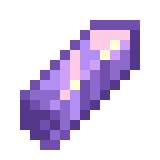
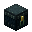
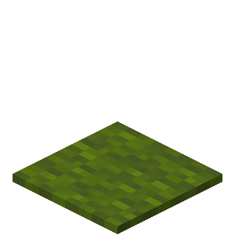
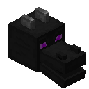
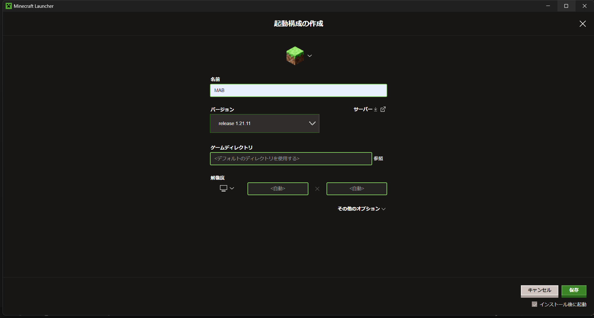
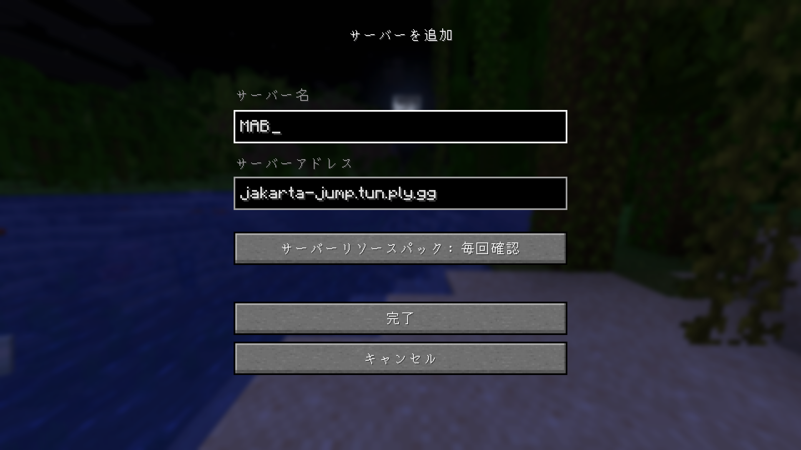
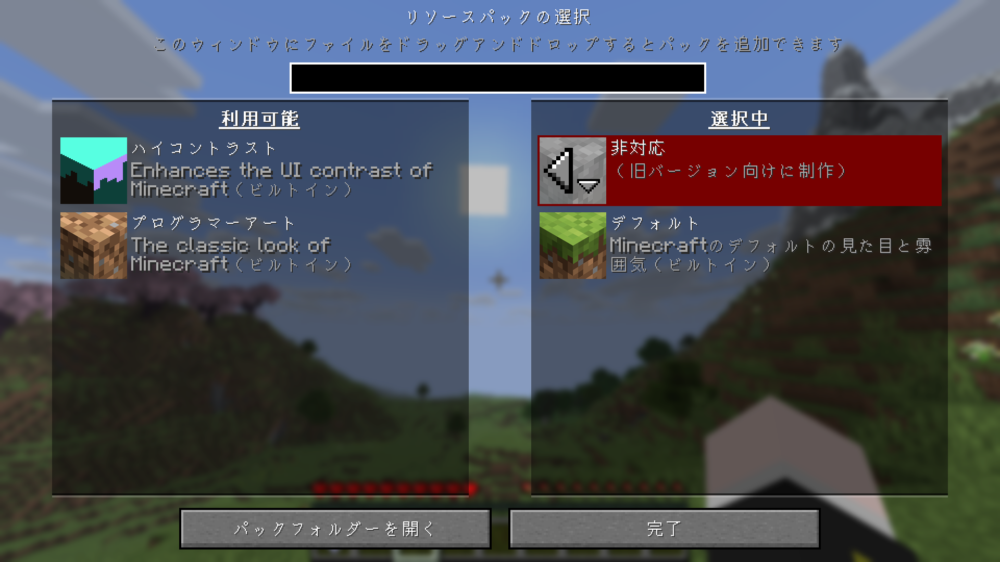

更新履歴
- [2026.09.29] MAB_ver.1.23.2を公開しました(「シゴロ賽」のバグ修正, Wikiの文章表現を実際の仕様に合わせて修正)
- [2026.09.27] MAB_ver.1.23.1を公開しました(「決闘」の仕様変更,「召喚」の強化,一部の「マーケットアイテム」の追加、削除および仕様変更, 特定の異能仕様の文章表現を統一)
- [2026.09.25] MAB_ver.1.22.3を公開しました(「魔術」の仕様変更,「逆境」の強化,「道化」の強化,「奇術」の強化,「海賊」の弱体化,「行商人」の機能追加, その他バグ修正)
- [2026.09.24] MAB_ver.1.20.2を公開しました(「奇術」の追加,「魔術」の追加,「道化」の追加, その他バグ修正)
- [2026.09.24] MAB_ver.1.19.1を公開しました(「海賊」の弱体化,「模倣」の仕様修正,「コイン」と「行商人」の追加,「引き分け」の削除と「サドンデス」の追加, 射撃練習場の改良, その他バグ修正)
- [2026.09.13] MAB_ver.1.17.1を公開しました(「海賊」の弱体化, 建築ツールの追加, その他バグ修正)
- [2026.09.11] MAB_ver.1.13.0を公開しました(「海賊」の追加,「商人」の強化,「罠師」の強化, その他バグ修正)
- [2026.09.01] サーバーWikiを公開しました。
はじめに
このサイトは、東野琉之介が考案・開発したマインクラフトの自作プラグインと、それを導入したマルチプレイゲームサーバーである
【麻雀同好会異能力戦線：MAB】の公式Wikiです。
このゲームはルールや能力の詳細な仕様を、文章量・情報量削減のためにゲーム内で確認できないよう省略しています。
したがって「MAB」をプレイする前やプレイ中などに、この公式Wikiを確認することを強くお勧めします。
また、ルールや能力の仕様はアップデートにより予告なく変更されることが多いため「更新履歴」を確認しておくこともお勧めします。
(P.S. 実はこのサイトには小ネタが仕組んであります。暇なときにでも探してみてネ)
動機・目的
麻雀同好会と遊んでいたレンタルマイクラマルチサーバーの期限が切れてから数カ月が経ったとき。
「メンバーと通話しながら気軽にみんなで遊べるゲームが欲しいな～」と常々思っていた僕は、どうせならプログラミングの知識を活かして「マインクラフトで、異能バトル漫画風なバトロワゲームの自作プラグインを作ればおもろいのでは？」
と思い立ち、制作を進めていくことを決めました。
そこから、マイクラ公式の大規模アプデに振り回されたり、そもそも学生生活が忙しすぎたりなど紆余曲折を経て、生成AIフル活用により正式実装レベルにまでこぎつけることができました。
（Special Thanks：良きデバッグテストプレイヤー「かえるこうはい」）
コンセプト
このゲームのコンセプトは「弓 × 異能 × バトロワ」のマイクラプラグイン。
お互いの持つ異能を駆使しながら、弓矢でヘルスを削り合い、最後の1人になるまで生き残るバトロワサーバーです。
ただ、麻雀同好会はメンバーが自分を含めて最大でも5人であるため、異能を駆使したバトロワを十分に楽しめつつ、1ゲームはそこまで長引かないようなカジュアルなゲームシステムを目指しました。
（ちなみに、ゲームタイトルは「麻雀同好会異能力戦線」の英名である「Mahjang-club Ability Battle-royale」の頭文字をとって「MAB」としている。 少人数の仲間内だけで遊ぶゲームということで、「仲のいい友達」という意味のマブと音が一緒であり、かつ非常にシンプルなネーミングなのでプログラミング的にも記述コストが低くお気に入り）
異能（アビリティ）データ一覧
用語説明：
【No.】：内部処理に必要な異能固有のナンバリング。
たいていは東野琉之介が異能の「熟語」と「パッシブ」「アクティブ」の原案を決定した順番に数字が振られており、特に深い意味はない。
【異能名】：
その異能の異能効果に応じた「二字熟語」が割り当てられている。
一目でどんな効果か想像できて(主観)、奇を衒いすぎずシンプルで(主観)、それでいてカッコいい熟語(超主観)という基準に基づいて命名されている。
【パッシブ】：
「パッシブ」は一般に、その異能力者が何かしら特定の操作を行わずとも、常に発動することのできる能力のことをさす。異能によっては必ずしも常に発動するわけではない。
【アクティブ】：
「アクティブ」は一般に、その異能力者が何かしら特定の操作を行うことで、任意に発動することのできる能力のことをさす。多くの場合「アクティブ」の能力にはクールダウンが発生する。
異能によっては必ずしも任意に発動するわけではない。
No.01 【疾風】
- 常に移動速度が通常の1.5倍になる。
- 走り続けている間、1秒毎に1ずつ「疾風ゲージ」が増加していく。
- 走っていない間、0.5秒毎に1ずつ「疾風ゲージ」が減少していく。
- 「疾風ゲージ」は最大15まで増加する。
- 「疾風ゲージ」が15の状態の時「颯(ハヤテ)」を纏う。
- 「颯」を纏っている間、一度だけ被ダメージを0にする。
- 一度被ダメージを受けると「颯」は解除され「疾風ゲージ」が0にリセットされる。
No.02 【浮遊】
- 常に跳躍力が通常の2倍になる。
- 空中でジャンプキーを押すことでさらに飛び上がることができる。
- 「スカイウォーク」によって飛び上がった後、再度「スカイウォーク」を発動するには一度地面に着地する必要がある。
No.03
【転移】

- 1ゲームに一度だけ、致命の一撃を受けた際に、体力がハート0.5個分となって踏みとどまり収縮エリア外を除いたバトルフィールド上のランダムな座標へ転送される。
- しゃがみながら矢を放つことで、その着弾地点にテレポートする。
No.04 【隠密】
- メインハンドに何も持っていない状態のとき、完全に透明化する。
- 透明化している間、近接による与ダメージが0に固定される。
- しゃがみながら矢を放つと、その矢によってダメージを与えた他プレイヤーに2秒間の盲目効果を付与する。
- 「忍法目眩まし」を発動してから、再度「忍法目眩まし」を発動可能になるまで8秒間のクールダウンが発生する。
No.05 【再生】
- 2秒毎に0.5ハート分の自動回復が付与される。
- 致命の一撃を受けた際に、体力がハート0.5個分となって踏みとどまり収縮エリア外を除いたバトルフィールド上のランダムな座標へ転送され、同時に体力が即時全回復する。
- 「リバイブ」を発動してから、再度「リバイブ」を発動可能になるまで300秒間のクールダウンが発生する。
No.06 【精密】
- 放った矢が速度を保ったまま、重力を無視して直進する。
- 放った矢は10秒で消滅する。
- 弓矢を構えながら5秒間しゃがみ続けることで、「チャージショット」を放つことができる。
- 「チャージショット」では与ダメージがハート3個分である即着弾を放つことができる。
- 「チャージショット」の射程距離は100ブロックである。
No.07
【分析】

- 常に画面右側に「自身から最も近い他プレイヤーの情報」が表示されている。
- 「自身から最も近い他プレイヤーの情報」として表示される情報は「他プレイヤーの名前」「異能名」「現在体力」「自身からの相対距離」である。
- 「罠師」の異能力者が仕掛けた「罠チェスト」「偽チェスト」「トラバサミ」を、「罠師」の異能力者と同じ目印で判別できる。
No.08 【勇者】
- 矢の与ダメージがハート1個分になる。
- 「聖剣」を所持している。
- 「聖剣」での与ダメージがハート2個分になる。
- 「聖剣」を手に持っている間、移動速度が通常の1.2倍になる。
- 他プレイヤーを「聖剣」で倒すと体力が即時全回復する。
- 他プレイヤーを倒したことがある他プレイヤーに対して「聖剣」の与ダメージが通常の2倍になる。
No.09 【吸血】
- 他プレイヤーにダメージを与える毎に「吸血ゲージ」が1ずつ増加していく。
- 「吸血ゲージ」は最大10まで増加する。
- 「ヴァンパイアファング」を所持している。
- 「ヴァンパイアファング」を使用することで「吸血ゲージ」を全て消費し「変身状態」となる。
- 「変身状態」では消費した「吸血ゲージ」の値に応じた能力を解放する。
消費値1～4：移動速度と跳躍力が通常の1.5倍になる。
消費値5～9：消費値1～4状態の能力に加えて、体力の最大値が通常の2倍になり、即時回復する。
消費値10：消費値5～9状態の能力に加えて、移動速度がさらに2倍になり、跳躍力がさらに4倍になり、近接での与ダメージがハート2個分になり、エリトラを自動的に装備する。
- いずれの能力も効果時間は33秒間であり、能力使用後は、再度「ヴァンパイアファング」を使用可能になるまで66秒間のクールダウンが発生する。
No.10 【爆破】
- 放った矢が赤色に発光する。
- 矢の与ダメージがハート3個分になる。
- しゃがむ毎に足元に爆発を発生させ、目線の方向に推進力を得ることができる。
- 赤色の矢の爆発は矢を中心とした半径3ブロック範囲内にハート0.5個分のダメージを与える。
- しゃがむ毎に、自らは0.5ハート分のダメージを受ける。
- しゃがむことで着弾地点に残留している赤色の矢が爆発する。
No.11 【決闘】
- 「デュエル・フィールド」にいる全てのプレイヤーの体力の最大値をハート5個分に固定する。
- 「デュエル・フィールド」にいる全てのプレイヤーの全ての異能効果を無効化する。ただし「パッシブ：正々堂々」に限りその対象ではない。
- 「デュエル・フィールド」にいる全てのプレイヤーの全ての所持アイテムを一時的に削除する。
- 「デュエル・フィールド」から他プレイヤーを倒して帰還したプレイヤーに、全ての一時的に削除していた所持アイテムを返却する。
- 「デュエル・フィールド」から他プレイヤーに倒されて帰還したプレイヤーに、一時的に削除していた所持アイテムのうち、弓と異能の専用アイテムと「エリアコンパス」のみを返却する。
- 「デュエル・フィールド」から他プレイヤーに倒されて帰還したプレイヤーが所持していた、弓と異能の専用アイテムと「エリアコンパス」以外の全てのアイテムを「デュエル・フィールド」から他プレイヤーを倒して帰還したプレイヤーに与える。
- 転送から30秒間が経過しても決着がつかなかった場合は、「デュエル・フィールド」から帰還した全てのプレイヤーに、全ての一時的に削除していた所持アイテムを返却する。
- 「デュエル・フィールド」から帰還した全てのプレイヤーの体力を即座に「デュエル・フィールド」転送前の状態に戻す。
- 近接でダメージを与えた他プレイヤーを「デュエル・フィールド」と呼ばれる専用のフィールドに転送し、同時に自身も「デュエル・フィールド」に転送する。
- 「デュエル・フィールド」にいるプレイヤーのうちどちらか一方が倒れるか、転送から30秒間が経過すると「デュエル・フィールド」にいる全てのプレイヤーが収縮エリア外を除いたバトルフィールド上のランダムな座標へ転送される。
- 「デュエル・フィールド」で致命の一撃を受けたプレイヤーは脱落せず、「他プレイヤーに倒された」ものとして扱われる。
- 一度「アクティブ：決闘者の矜持」を発動してから、再度「アクティブ：決闘者の矜持」を発動するまで150秒間のクールダウンが発生する。
No.12
【削除】

- 「ブラックノート」を所持している。
- 体力の最大値が通常の0.5倍になる。
- 常に画面右側に「自身から最も近い他プレイヤーの異能名」が表示される。
- 「ブラックノート」を使用すると、ゲームに参加している他プレイヤーの一覧を参照することができる。
- プレイヤーの一覧から任意の1人を選択するとMABに登場する全ての異能名が表示され、その中から任意の異能を1つ選択することができる。
- もし選択した異能が、選択したプレイヤーの異能と一致していた場合、選択された他プレイヤーは40秒後に「パッシブ」と「アクティブ」の異能効果を無効化される。
- 「アクティブ：新世界の神」によって無効化された異能効果は、そのゲーム中に再度有効化されることはない。
- 「ブラックノート」で異能を選択してから、再度「ブラックノート」を使用可能になるまで20秒間のクールダウンが発生する。
- 異能の選択をゲーム中で計4回間違えるとそれ以降「ブラックノート」を使用することができなくなる。
- 「ブラックノート」をもって6秒間しゃがみ続けると、「特殊パッシブ：死神の目」を解放することができる。
No.13 【豪運】
- 致命の一撃を受けた際に、7％の確率で体力がハート0.5個分となって踏みとどまり、収縮エリア外を除いたバトルフィールド上のランダムな座標へ転送され、同時に体力が即時全回復する。
- 攻撃をする毎に77％の確率で矢の与ダメージがハート3個分になる。
- 攻撃を受ける毎に77％の確率で被ダメージが0.75倍になる。
No.14 【模倣】
- 他プレイヤーにダメージを与える毎に「アビリティディスク」を1枚取得する。
- 「アビリティディスク」には「アビリティディスク：疾風」のようにダメージを与えた他プレイヤーの異能名がついている。
- 同じ異能名をもつ「アビリティディスク」は同時に3枚まで所持することができる。
- 「アビリティディスク」を使用している間に他プレイヤーにダメージを与えても「アビリティディスク」は取得できない。
- 「アビリティディスク」を使用することで、その「アビリティディスク」がもつ異能名の「パッシブ」「アクティブ」の異能効果を30秒間使用することができる。
- 「アビリティディスク」を使用すると、模倣した「パッシブ」「アクティブ」の異能効果に必要な専用アイテムも30秒間配布される。
- ただし、インベントリに専用アイテム分の空きがなかった場合、専用アイテムはその場にドロップする。
- 「アビリティディスク」は一度使用すると一枚消滅する。
- 「ゲーム中に一度だけ」の異能効果は、「アビリティディスク」で模倣し直すたびに、また使うことができる。
- 「アビリティディスク」を使用してから、再度「アビリティディスク」を使用可能になるまで30秒間のクールダウンが発生する。
No.15
【商人】

- ゲーム開始から3秒毎に「コイン」が1ずつ増加していく。
- 「DFD(デイリーファストデバイス)」を所持している。
- 「DFD」を使用することで「マーケット」を参照することができる。
- 「マーケット」にはゲーム中のチェストから入手できる全てのアイテムに加え、専用の特別なアイテムである「マーケットアイテム」が表示されている。
- それぞれのアイテムには「値段」がつけられており「値段」と同数の「コイン」と引き換えることで、任意のアイテムを取得することができる。
- 「マーケットアイテム」は基本的に一度使用すると消滅するが(その限りでないアイテムも存在する)、「値段」と同数の「コイン」があれば「マーケット」から何度でも引き換えることができる。
- なお「マーケット」で引き換えたアイテムは、他プレイヤーも使用することができる。
- 「ゾーンエネルギー」：30コイン 使用することで、15秒間移動速度と跳躍力が2倍になり、1秒毎に1ハート分の自動回復が付与される。
- 「バウンティ・ポスター」：45コイン 使用することで、ゲームに参加している他プレイヤーの一覧が参照できる。
- 「ポータブルテレポーター」：45コイン 使用することで、収縮エリア外を除いたバトルフィールド上のランダムな座標に転送することができる。
- 「ものしりメガネ」：45コイン 使用することで、常に画面右側に最も近い他プレイヤーの「名前」と「異能名」が表示される。
- 「煙玉」：60コイン 使用することで、10秒間完全に透明化する。
- 「ガン・スミス・チケット」：60コイン 使用することで自身の弓を「精密」の異能効果と同じ効果を持つ弓に強化できる。
- 「ウエスタン・ガン・チケット」：60コイン 使用することで自身の弓を「速射」の異能効果と同じ効果を持つ弓に強化できる。
- 「エクスカリバー・レプリカ」：60コイン 他プレイヤーにハート2個分のダメージを与える剣。
- 「ファーストボム」：60コイン 使用することで、しゃがむ毎にハート0.5個分のダメージを受ける代わりに、目線の先へ推進力を得ることができる。
- 「シゴロ賽」：60コイン 使用することで、現在の最大体力に関わらず即座にハート5個分の追加の体力を得ることができる。
- 「タイマーリセッター」：60コイン 使用することで、自身を中心とした半径30ブロック以内に存在する他プレイヤーの異能効果に30秒間の強制的なクールダウンを発生させる。
- 「海楼石」：90コイン インベントリに入れている間、常に「海賊」の異能効果の影響を受けなくなる。
- 「銀の弾丸」：90コイン 「吸血」の異能力者に対して特攻を持つ矢が一発だけ装填されたクロスボウ。
- 「神殺しの槍」：90コイン 「聖域」の異能力者に対して特攻を持つトライデント。
- 「儀礼剣」：90コイン 「魔術」の異能力者に対して特攻を持つネザライトの剣。
「マーケットアイテム」一覧
その一覧から任意の他プレイヤーを1人選択することで、そのプレイヤーを「指名手配」することができる。
「指名手配」してから60秒間のうちにそのプレイヤーを倒すことで、145コインを入手する。
また「ポータブルテレポーター」を所持した状態で致命の一撃を受けると、体力がハート0.5個分となって踏みとどまり自動的に収縮エリア外を除いたバトルフィールド上のランダムな座標に転送される。
なお「ガン・スミス・チケット」によって強化された弓は「チャージショット」を放つまでのしゃがみ時間が8秒間となっている。
「ウエスタン・ガン・チケット」をすでに購入している場合「ガン・スミス・チケット」は購入することはできない。
なお「ウエスタン・ガン・チケット」によって強化された弓は「50%の確率で矢を消費しない効果」が発生せず、必ず矢を消費する。
「ガン・スミス・チケット」をすでに購入している場合「ウエスタン・ガン・チケット」は購入することはできない。
なお「ファーストボム」によって身体が強化されたとしても矢は通常の与ダメージであり、赤く発光することもない。
同時に、自らの異能効果のクールダウンが即座に0秒になり「ゲーム中に一度だけ」の効果を持つ異能効果を再度使用できるようになる。
「黒腕」の近接強化、「見聞」の必中弾、「王の素質」のいずれも無効化することができる。
使用することで通常の矢のように「銀の弾丸」を放つことができる。
「銀の弾丸」は「ヴァンパイアファング」を使用した「変身状態」の「吸血」の異能力者に対してハート66個分のダメージを与える。
使用することで通常のトライデントのように「神殺しの槍」を一度だけ放つことができる。
「神殺しの槍」は「聖域」の異能力者に対してハート99個分のダメージを与える。
「神殺しの槍」は「聖域」の異能効果を無効化し、「アクティブ：絶対恐怖領域」によって展開される「心の壁」の影響を一切受けない。
「儀礼剣」によってダメージを受けた「魔術」の異能力者は、現在体力や「固有魔法」「魔女化」「なれはて」などに関わらず即座に倒される。
また「儀礼剣」を所持しているプレイヤーが「魔術」の異能力者に「告発」され「魔女裁判」にて過半数の「処刑」の投票を得た場合、現在体力やその他の異能効果に関わらず即座に倒される。
No.16 【逆境】
- 体力の初期最大値がハート10個分で固定され「注射器」「シールド」等のアイテムによって上昇させることができない。
- 「包帯」「医療キット」の回復量が通常の2倍になる。
- 体力がハート1個分減るごとに他プレイヤーに対する与ダメージが+5%上昇する。
- 他プレイヤーから致命の一撃を受けた際に、体力がハート0.5個分となって踏みとどまり「アクティブ：背水の陣」が発動する。
- 「アクティブ：背水の陣」が発動してから20秒間、移動速度と跳躍力が通常の2倍になる。
- 「アクティブ：背水の陣」が発動してから20秒間、全ての被ダメージを無効化する。
- 「アクティブ：背水の陣」が発動してから20秒間のうちに、他プレイヤーに対してハート5個分以上のダメージを与えることができなければ、その時点で即死する。
- 「アクティブ：背水の陣」が発動してから20秒間のうちに、他プレイヤーを1人でも倒すことができれば「逆境を乗り越える」ことができる。
- 「逆境を乗り越える」と、体力の最大値がハート20個分に上昇して即時全回復し、その時点で「アクティブ：背水の陣」は終了する。
- 一度「アクティブ：背水の陣」が発動してから、再度「アクティブ：背水の陣」が使用可能になるまで60秒間のクールダウンが発生する。
No.17 【賭博】
- 「賽と器」を所持している。
- 自らを中心とした半径60ブロック以内に「豪運」の異能力者が存在する場合「賽と器」を使用して表示される数字の出目が「777」に固定される。
- 「賽と器」を使用することで、画面に3つ並んだ1～6のランダムな数字を表示する。
- それらの3つの数字の出目によって異なる能力を解放する。 ピン・ニゾウ・サンタ：
- 「賽と器」を使用してから、再度「賽と器」を使用可能になるまで30秒間のクールダウンが発生する。
60秒間、移動速度と跳躍力が通常の1.5倍になる。
ヨツヤ・ゴケ・ロッポウ：
60秒間、与ダメージが通常の1.5倍、被ダメージが通常の0.75倍になる。
シゴロ：
最大体力がハート5個分増加し、体力が即時全回復する。
アラシ：
60秒間、移動速度と跳躍力、与ダメージが通常の2倍、被ダメージが通常の0.5倍になる。
ピンゾロ：
60秒間、「アラシ」の効果に加えてダメージを与えた他プレイヤーの移動速度を5秒間通常の0.5倍にし、そのプレイヤーを5秒間発光させる。
ヒフミ：
30秒間、移動速度と跳躍力が通常の0.3倍になり、自身が発光する。
スリーセブン：
77秒間、移動速度と素手での与ダメージが通常の7倍になる。
No.18 【聖域】
- 「生命の実」を所持している。
- ゲーム開始時に「活動時間」が91.3秒に設定される。
- 「生命の実」を使用することで「心の壁」を展開することができる。
- 「心の壁」を展開している間、全ての被ダメージを無効化する。
- 「心の壁」を展開している間、自身を中心とした半径3ブロック内に他プレイヤーは放った矢や異能効果を含め一切干渉することができない。
- 「生命の実」を再度使用することで「心の壁」は任意のタイミングで解除することができる。
- 「心の壁」を展開している間、「活動時間」が展開時間に対応して減少していく。
- 「活動時間」が0秒になると強制的に「心の壁」は解除され、再度「生命の実」を使用することができなくなる。
No.19 【念視】
- ゲーム開始から15秒経つ毎に、全ての他プレイヤーの座標に「残留思念」を発生させる。
- 「残留思念」は「念視」の異能力者以外には見ることができない。
- 「残留思念」は発生してから経過時間に応じて色が変わり、90秒後に消滅する。 0～30秒：赤色
31～60秒：橙色
61～90秒：青色
- 5秒間しゃがみ続けた後、そのまましゃがみ続けている間、全ての他プレイヤーに光の柱が立ち、他プレイヤーの方角に光線が伸びる。
- 他プレイヤーの方角に伸びる光線は他プレイヤーとの相対距離によって色が変化する。
- この光の柱と光線は「念視」の異能力者以外に見ることはできない。
No.20 【速射】
- 弓を最大まで引ききる時間が通常の0.5倍である。
- 50%の確率で矢を消費しない。
- しゃがみながら弓を引き続けている間、矢を連射し続ける。
No.21
【採掘】

- 「採掘者の心」を所持している。
- 「採掘者の心」を使用することで、60秒間「サバイバルモード」になることができる。
- 「採掘者の心」を使用することで、「土ブロック」が64個と「採掘者のツルハシ」「採掘者のシャベル」が付与される。
- 「採掘者の心」を使用することで、60秒間、「暗視」と「採掘力上昇」のエフェクトが付与される。
- 「サバイバルモード」では地形の破壊やブロックの設置が可能となる。
- 「サバイバルモード」が解除されると、設置したブロックは破壊され、破壊したブロックは元に戻り「採掘者のツルハシ」「採掘者のシャベル」は回収される。
- 「採掘者の心」を使用してから、再度「採掘者の心」を使用可能になるまで120秒間のクールダウンが発生する。
No.22 【召喚】
- 「カンダカラ」を所持している。
- 「カンダカラ」を使用すると召喚できる「ケモノ」の一覧が表示され、選択した「ケモノ」を召喚できる。
- 同時に複数の「ケモノ」を召喚することはできず、新たに「ケモノ」が召喚された時点ですでに召喚されていた「ケモノ」は消滅する。
- 「ケモノ」を召喚するためには「ケモノ」ごとに既定の体力を消費し、また「ケモノ」を選択してから召喚するまでに既定の待ち時間が発生する。
- 「ヌエ」： ハート2個分の体力を消費することで「ヌエ」を1体召喚する。
- 「オオカミ」： ハート2個分の体力を消費することで「オオカミ」を5体召喚する。
- 「ウサギ」： ハート1個分の体力を消費することで「ウサギ」を5体召喚する。
- 「アクマ」： ハート5個分の体力を消費することで「アクマ」を1体召喚する。
- 「カンダカラ」を使用してから再度「カンダカラ」を使用できるようになるまで60秒間のクールダウンが発生する。
「ヌエ」は乗り込むことで自在に空中を移動することができる。
「ヌエ」はハート4個分の体力であり他プレイヤーからのハート4個分の被ダメージによって消滅する。
「ヌエ」は召喚から30秒後に消滅する。
召喚に必要な待ち時間は3秒間である。
「オオカミ」は「召喚」の異能力者にダメージを与えてきた他プレイヤーや「召喚」の異能力者がダメージを与えた他プレイヤーに対して一斉に敵対し、それぞれハート2個分のダメージを与えたのち消滅する。
「オオカミ」はハート4個分の体力であり他プレイヤーからのハート4個分の被ダメージによって消滅する。
召喚に必要な待ち時間は3秒間である。
「ウサギ」を召喚すると、自らが10秒間完全に透明化する。
「ウサギ」は召喚から20秒後に消滅する。
召喚に必要な待ち時間は1秒間である。
「アクマ」は召喚時に「召喚」の異能力者から最も近い位置にいた他プレイヤーに対して2秒毎にハート4個分のダメージを与え続ける。
「アクマ」はそのプレイヤー以外を攻撃せず、そのプレイヤーが倒れると消滅する。
召喚時に狙える他プレイヤーがいない場合、「アクマ」は召喚されず、消費した体力は戻らない。
「アクマ」はハート6個分の体力であり他プレイヤーからのハート6個分の被ダメージによって消滅する。
「アクマ」は召喚から30秒後に消滅する。
召喚に必要な待ち時間は8秒間である。
No.23
【縮身】

- 「ピム・パーティクル」を所持している。
- 体力の最大値が初期状態でハート5個分である。
- 身体のサイズが通常の0.5倍である。
- 「ピム・パーティクル」を使用することで30秒間、身体のサイズが通常の0.25倍となる。
- 「ピム・パーティクル」を使用することで30秒間、矢による与ダメージが通常の0.5倍となる。
- 「ピム・パーティクル」を使用することで30秒間、近接による与ダメージが0に固定される。
- 「ピム・パーティクル」を使用してから再度「ピム・パーティクル」を使用できるようになるまで90秒間のクールダウンが発生する。
No.24 【罠師】
- 「イカサマ札」を所持している。
- 「仕掛け糸」を所持している。
- 仕掛けた「罠チェスト」「偽チェスト」「トラバサミ」が目印で判別できる。
- 「罠チェスト」は紫、「偽チェスト」は赤、「仕掛け糸」は黄緑の目印で表示される。
- 「罠チェスト」「偽チェスト」「トラバサミ」を作動させた他プレイヤーの名前が通知される。
- 「イカサマ札」を「補給チェスト」に対して使用することで、その「補給チェスト」を「罠チェスト」に変えることができる。
- 「イカサマ札」を地面に対して使用することで、その場に「偽チェスト」を設置することができる。
- 「罠チェスト」および「偽チェスト」は中身の有無に関わらず、本物の「補給チェスト」と同じ光の柱が立つ。
- 他プレイヤーが「罠チェスト」または「偽チェスト」を開けると、そのプレイヤーに4秒間の盲目、10秒間の発光、8秒間の鈍足が付与され、ハート2個分のダメージを受ける。
- 「罠チェスト」と「偽チェスト」はフィールド上で合計5つまで仕掛けることができ、6つ目を仕掛けると最も古いものが解除される。
- 「仕掛け糸」を使用することで、自らの足元に「トラバサミ」を設置することができる。
- 「トラバサミ」は他プレイヤーが半径4ブロック以内に入ると作動し、そのプレイヤーに10秒間の発光と6秒間の鈍足が付与される。
- 同時に、そのプレイヤーはハート1個分のダメージを受け、所持している「矢」を5本奪われる。奪われた「矢」は「罠師」の異能力者が取得する。
- 相手が5本の「矢」を所持していない場合は、所持している数だけ奪う。
- 「トラバサミ」のみ、他プレイヤーからも確認できるよう微かに目印が表示される。
- 「トラバサミ」は同時に3つまで設置することができ、4つ目を設置すると最も古いものが消滅する。また、設置から70秒が経過すると自然に消滅する。
- 「仕掛け糸」を使用してから、再度「仕掛け糸」を使用可能になるまで25秒間のクールダウンが発生する。
No.25
【収集】

- 「二次元ポケット」を所持している。
- 「二次元ポケット」の中に、10秒毎に1つのMABの既存アイテム、「コイン」、または「ゴミ」が無作為に生成される。空きマスが無い場合は生成されない。
- 「ゴミ」は使用しても何の効果も無い「欠けた火打石」「ボロ布」「動物の骨」「泥だんご」「欠けたレンガ」の5種類で、それぞれ10個で1スタックとなる。
- 「二次元ポケット」の中身は常に自動で整理され、同じアイテムは1つのマスにまとめられる。
- 「二次元ポケット」を使用することで、9×3マスの収納画面を開くことができる。
- 「二次元ポケット」の中でアイテムが埋まっているマスの数に応じて、最大体力が1マスにつきハート0.5個分、移動速度が1マスにつき1%ずつ上昇する。
- フィールドの「補給チェスト」から入手したアイテムを「二次元ポケット」へ収納することもできる
- 「二次元ポケット」の中身は倒された際に消滅し、その場にドロップすることはない。
- 「二次元ポケット」自身を含む異能の専用アイテムを収納することはできない。
No.26 【海賊】
- 近接による与ダメージがハート1個分である。
- 「麦わら帽子」を所持している。
- 水に触れている間、移動速度が通常の0.3倍となり、盲目が付与される。
- 「麦わら帽子」を使用すると10秒間「見聞」の状態となる。
- 「見聞」の状態であるとき、移動速度と跳躍力が通常の1.2倍になる。
- 「見聞」の状態であるとき、自身の視界内に存在する、射線が遮られていない最も近い他プレイヤーに対して、最大まで引き絞った矢が必ず命中する。
- 「視界内」とは「自身の正面から左右60度以内」「自身からの直線距離が60ブロック以内」「自身と対象の間に射線を遮るブロックが存在しない」の3条件をすべて満たす範囲を指す。
- 上記を満たす他プレイヤーが1人もいない場合、放った矢は通常の矢として飛ぶ。
- 最大まで引き絞っていない矢は、上記を満たす他プレイヤーがいても通常の矢として飛ぶ。
- 一度「麦わら帽子」を使用してから再度「麦わら帽子」を使用できるようになるまで200秒のクールダウンが発生する。
- 「麦わら帽子」を手に持ちながら3秒間しゃがみ続けると、生存中の全ての他プレイヤーに対して10秒間の盲目を付与する。
- 「王の素質」を受けた生存中の全ての他プレイヤーは、5秒間移動速度と跳躍力が通常の0.3倍になり、その5秒間は弓や専用アイテムを含む全てのアイテムが使用不可となる。
- 「王の素質」はゲーム中で一度発動すると再度発動することができない。
No.27 【奇術】
- 「シルクハット」を所持している。
- 他プレイヤーの異能名を知ることのできる異能効果に対して、自身の異能名が偽の異能名で表示される。
- 偽の異能名は、ゲーム開始時にそのゲームで誰も使用していない異能の中から無作為に1つ抽選される。
- 偽の異能名と同じ異能を他プレイヤーが持つことになった場合、偽の異能名は選び直される。
- 「シルクハット」を使用することで、半径10ブロック以内の最も近い他プレイヤーの所持アイテムを無作為に1つ盗み、代わりに「ゴミ」を1つ置いていく。
- 壁越しでも盗むことができる。範囲内に他プレイヤーがいなかった場合は何も起こらない。
- 盗むことができるのは「補給チェスト」から入手できるアイテム、「マーケットアイテム」「コイン」「矢」であり、弓・異能の専用アイテムは盗むことができない。
- 1マスに重なっているアイテムはそのマスの分をまとめて盗むが、矢は一度に最大10本までしか盗むことができない。
- 一度アイテムを盗んでから、再度アイテムを盗めるようになるまで20秒間のクールダウンが発生する。
- ただし、盗めるアイテムを相手が1つも持っていなかった場合は何も起こらず、5秒間のクールダウンが発生する。
- しゃがみながら放った矢が他プレイヤーに命中することで、そのプレイヤーの異能を無作為に別の異能へすり替える。
- すり替え先の異能は、そのゲームで誰も使用していない異能の中から抽選される。
- 異能をすり替えられた他プレイヤーは、すり替え前の異能のあらゆる異能効果がリセットされる。
- すり替え先の異能名は、すり替えられた本人と「奇術」の異能力者に通知される。
- 一度異能のすり替えを発動してから、再度異能のすり替えを発動できるようになるまで100秒間のクールダウンが発生する。
- 異能のすり替えが発動しなかった場合は10秒間のクールダウンが発生する。
No.28 【魔術】
- 「魔法のステッキ」を所持している。
- ゲーム開始から以下の条件に従って「魔女因子」が上昇していく。 ・被ダメージを受ける：ハート1個分につき1%
- 「魔女因子」が50%以上になると「魔女化」の状態となる。
- 「魔女化」の状態では「固有魔法」が強化され、「固有魔法」のクールダウンが通常の0.7倍になる。
- 「魔女化」の状態では身体から紫色の瘴気が立ち上り、他プレイヤーからも見えるようになる。
- 「魔女化」の状態で30秒間他プレイヤーにダメージを与えずにいると、抑えきれない殺人衝動によってハート1個分のダメージを受けるが、このダメージで倒れることはない。
- 「魔女因子」が100%になると「なれはて」の状態となる。
- 「なれはて」になると、体力の最大値が通常の2倍になって即時全回復し、身体のサイズが通常の1.5倍、移動速度が通常の1.2倍、近接での与ダメージがハート1.5個分になる。
- 「なれはて」は弓、アイテム、「固有魔法」、「魔女裁判」を一切使用することができない。
- 「なれはて」には、全てのプレイヤーから視認できる発光が常に付与される。
- 「魔術」の異能に限り、1ゲーム中で複数のプレイヤーに同時に選出されることがある。
・「固有魔法」を使用する：1回につき4%
・自身から半径40ブロック以内で他プレイヤーが倒れる：10%
・時間の経過：30秒毎に1%
- ゲーム開始時に「魔女検査」が行われる。
- 「魔女検査」では、以下の「固有魔法」のうちいずれか1つが無作為に抽選される。
- 同じゲームに「魔術」の異能力者が複数いる場合は、できるだけ互いに異なる「固有魔法」が抽選される。
- 「魔法のステッキ」を使用することで、割り当てられた「固有魔法」を発動することができる。
- （）内は「魔女化」の状態での効果である。
- 「魔法のステッキ」をしゃがみながら使用すると、生存している他プレイヤーの一覧が表示され、その中から1人を「魔女」として告発することができる。
- 告発すると「魔女裁判」が開廷され、告発されたプレイヤー以外の観戦中のプレイヤーも含む全てのプレイヤーに「処刑」か「無罪」かの投票が求められる。
- 告発した本人は、自動的に「処刑」に投票したものとして扱われる。
- 投票の時間は20秒間であり、「処刑」の票が過半数の得票を得れば可決、そうでなければ否決となる。
- 可決された場合、告発されたプレイヤーはハート5個分のダメージを受け、15秒間、全てのプレイヤーから視認できる発光が付与される。
- 否決された場合、偽りの告発をした罰として、告発した本人がハート5個分のダメージを受ける。
- 「魔女裁判」は、参加しているプレイヤーが3人以上いるときにのみ開廷することができる。
- 「魔女裁判」の開廷中は、生存中の全てのプレイヤーの弓や専用アイテムを含む全てのアイテムが使用不可となる。
- 「魔女裁判」を開廷してから、再度開廷できるようになるまで180秒間のクールダウンが発生する。
【死に戻り】： この魔法は「魔法のステッキ」では発動せず、倒れる寸前に自動で発動する。
致命の一撃を受けた際に、24秒前にいた位置へ戻り、体力も24秒前の状態に戻る。
ゲーム中に1度だけ発動する。
（2度目も発動する）
【洗脳】： 目線の先20ブロック以内の他プレイヤー1人に【止まれ】と命じ、2秒間その場から動けなくする。
（3秒間動けなくし、その間は弓を引くこともできなくする）
クールダウンは35秒間である。
【液体操作】： 目線の方向に絵の具を飛ばし、当たった他プレイヤーに3秒間の盲目と10秒間の発光を付与する。
（着弾地点から半径4ブロック以内の全ての他プレイヤーに影響を与える）
クールダウンは30秒間である。
【視線誘導】： 目線の先30ブロック以内の他プレイヤー1人の視線を、2秒間、反対の方向に固定する。
（自身を中心とした半径30ブロック以内の全ての他プレイヤーに影響を与える）
クールダウンは30秒間である。
【入れ替わり】： 目線の先40ブロック以内の他プレイヤー1人と位置を入れ替える。
（位置に加えて、残り体力の割合やその最大値なども入れ替える）
クールダウンは60秒間である。
【モノマネ】： 他の「固有魔法」の効果を模倣する。
「魔法のステッキ」を使用すると、「死に戻り」と「モノマネ」を除く10種の「固有魔法」のうちから、模倣するものを自由に選ぶことができる。
（模倣した「固有魔法」の魔女化した状態での効果を使用することができる）
クールダウンは、モノマネした「固有魔法」のクールダウンと同じである。
【幻視】： 「魔法のステッキ」を使用してから10秒以内に近接で攻撃した他プレイヤーの異能名を知ることができ、その後20秒間、そのプレイヤーの位置に自身にだけ見える光の柱が立つ。
（触れる必要がなくなり、目線の先40ブロック以内の他プレイヤーに影響を与える）
クールダウンは30秒間である。
【発火】： 自身を中心とした半径4ブロック以内の他プレイヤーを4秒間炎上させる。
（半径7ブロック以内の他プレイヤーを6秒間炎上させる）
クールダウンは35秒間である。
【怪力】： 10秒間、近接での与ダメージがハート2個分になり、殴った他プレイヤーを大きくノックバックさせる。
（近接での与ダメージがハート3個分になる）
クールダウンは60秒間である。
【浮遊】： 5秒間、空中へ浮き上がる。しゃがむことで浮き上がるのをやめて、ゆっくり降りることができる。
（自身を中心とした半径20ブロック以内の他プレイヤーも3秒間浮き上がらせ、浮き上がっている間、他プレイヤーはあらゆるアイテムを一切使用することができない）
クールダウンは30秒間である。
【千里眼】： 10秒間、自身に視線を向けている他プレイヤー（100ブロック以内で、間を壁に遮られていない相手）の位置に、自身にだけ見える光の柱が立つ。
（効果時間が60秒間になる）
クールダウンは30秒間である。
【治療】： 体力をハート3個分回復する。
（ハート5個分回復し、盲目・鈍足・発光などのデバフを削除し、「魔女因子」を30%減少させる）
クールダウンは40秒間である。
No.29 【道化】
- 「道化の仮面」を所持している。
- ゲーム開始から60秒経過する毎に、「道化の仮面」が無作為に選ばれた異能名の「仮面」に入れ替わる。
- 所持している「仮面」の異能の「パッシブ」と「アクティブ」の異能効果を使用することができる。
- 「仮面」の異能効果に必要な専用アイテムも配布され、「仮面」が付け替わると回収される。
- 「仮面」が入れ替わると、入れ替わる前の「仮面」の異能効果は全て失われる。
- 「仮面」には「奇術」「模倣」「削除」を除く全ての異能が抽選される。他プレイヤーと同じ異能の「仮面」になることもあるが、同じ異能の「仮面」が2回連続して選ばれることはない。
- 「ゲーム中に一度だけ」の異能効果は、「仮面」が付け替わると再度使用することができる。
- 常に画面右側に「今の仮面」が入れ替わるまでの残り秒数が表示される。
- 「決闘」の「デュエル・フィールド」にいる間は「仮面」は付け替わらない。
- 「道化の仮面」を持ってしゃがみながら使用すると、その場で倒れたふりをする。
- 倒れたふりをすると、全てのプレイヤーに偽の撃破通知が流れ、残り人数の表示も1人減る。
- 偽の撃破通知に表示される異能名は、発動するごとにそのゲーム中で誰も使用していない異能の中から無作為に1つ抽選される。
- 直前に自身へダメージを与えた他プレイヤーがいた場合は、そのプレイヤーに倒されたように見える。
- 倒れたふりをしてから20秒間、完全に透明化して足音が消え、「分析」「念視」「ものしりメガネ」などの異能効果にも映らなくなる。
- 透明化している間に他プレイヤーへ攻撃すると透明化は解除されるが、その一撃の与ダメージはハート4個分になる。
- 20秒が経過するか攻撃をすると、残り人数の表示などは元に戻る。
- 「死んだふり」はゲーム中に一度だけ発動することができる。
No.30 【聴牌】
- 「雀卓」を所持している。
- 45秒毎に1つ、オフハンドにランダムな「麻雀牌」が生成される。
- 生成された「麻雀牌」は「手牌」と交換せずに30秒経過すると自動的に消滅する。
- 「麻雀牌」は「1～9までの索子」「三元牌」の全12種類、総数48枚がランダムに生成される。
- 「麻雀牌」を生成し尽くした場合は、捨てた「麻雀牌」を混ぜ直して再び生成する。
- オフハンドの「麻雀牌」は動かしたり捨てたりすることができない。「麻雀牌」が生成されたときにオフハンドに持っていたアイテムは、インベントリへ移される。
- 「雀卓」を使用することで「手牌」を参照することができる。
- 「雀卓」にはゲーム開始と同時にランダムな14個の「麻雀牌」が生成されており、これを「手牌」と呼ぶ。
- 生成された「麻雀牌」は、「雀卓」で「手牌」のうち任意の1つを選択することで、その「手牌」と入れ替えることができる。入れ替えた「手牌」は捨てられる。
- 「手牌」が特定の「役」を満たしていると、それに応じた能力を得る。「雀卓」では「役」ごとに、揃うまでに入れ替えが何枚必要かの目安も確認できる。
順子：順子1つにつき移動速度が25%上昇する。
刻子：刻子1つにつき与ダメージが25%上昇する。
（順子と刻子は合わせて2つまで数え、多いときは刻子から数える。順子・刻子の効果は「役」が揃っても失われない）
対々和：移動速度と跳躍力が通常の1.5倍、他プレイヤーに対する与ダメージが通常の1.75倍になる。
平和：しゃがみながら放った矢でダメージを与えた他プレイヤーの「アクティブ」の異能効果を15秒間使用不可にする。一度他プレイヤーの異能効果を使用不可にしてから、再度使用不可にできるまで30秒間のクールダウンが発生する。
七対子：被ダメージが0.75倍になり、2秒毎にハート1個分の自動回復が付与される。
大三元：「対々和」の能力に加え、被ダメージが0.5倍になり、矢を消費しなくなる。「大三元」が揃うと、全てのプレイヤーに通知される。 - 上位の「役」がその「役」自体を内包している場合は、上位の「役」の効果のみが適用される（「大三元」は「対々和」を内包する）。
- 内包関係にない「役」どうしは、両方の効果が適用される。
- 同じ能力値に複数の効果がかかる場合は、最も大きい効果のみが適用される（例：「刻子」2つの与ダメージ1.5倍と「対々和」の1.75倍が重なる場合は1.75倍）。
- 「平和」は面子4つが全て順子で雀頭がある形、「七対子」は異なる対子が7つある形、「対々和」は面子4つが全て刻子で雀頭がある形、「大三元」は三元牌3種の刻子に面子1つと雀頭がある形で揃う（雀頭や待ちの形は問わない）。
特殊異能
特殊異能とは：
PvP以外の特殊な勝利条件がある、ランダムに選出されるにはあまりに扱う難度が高い、または明確に強すぎる、あるいは特殊な戦闘システムが求められるといった異能が「特殊異能」に分類されている。特殊異能力者が選出されると、残りのほか全てのプレイヤーは「同陣営」として扱われMABの基本的なルールに基づいた「レイドバトル」が開始される。
- 「特殊異能」は「異能予約」によって自ら選択しない限り、ゲームで選出されることはない。
- 「特殊異能」は、ゲームに参加している全プレイヤー数が計3名以上のときにのみ選出することができる。3名に満たない場合、特殊異能の予約は無効となる。
- 1つのゲームで選出される特殊異能力者は1人までである。特殊異能の予約が重なった場合は抽選となり、選出されなかったプレイヤーは通常の異能の抽選となる。
- 「特殊異能」は、通常の異能の抽選、「奇術」のすり替え先、「道化」の「仮面」、偽の異能名には選ばれない。
- 特殊異能が選出されたゲームでは、ゲーム開始時に、特殊異能力者が誰で、その特殊異能が何であるかが全てのプレイヤーに告知される。
- 特殊異能力者以外の全てのプレイヤーは、同じ「陣営」として扱われる。
- 同じ陣営のプレイヤーに対しては、盲目・鈍足・発光・足止め・視線の固定・炎上・アイテムの使用不可・異能の使用不可・アイテムの盗難・罠・爆風・指名手配・「魔女裁判」の告発・異能のすり替え・異能の削除・「デュエル・フィールド」への転送といった負の異能効果は発生しない。
- ただし、弓と近接による与ダメージは同じ陣営のプレイヤーにもそのまま与えられる。「魔術」の「入れ替わり」（位置の入れ替え）や「幻視」などの負ではない異能効果も、同じ陣営のプレイヤーにそのまま効く。
- 「海賊」の「見聞」による必中の一撃と「王の素質」は、同じ陣営のプレイヤーを対象にせず、特殊異能力者だけを狙う。
- 「魔女裁判」の開廷中は例外として、同じ陣営のプレイヤーを含む全てのプレイヤーのアイテムが使用不可となる。
- 特殊異能力者の体力の最大値は、特殊異能力者以外のプレイヤーの人数×ハート10個分増える。
- 特殊異能力者が収縮エリア外で受けるダメージは、（1＋特殊異能力者以外のプレイヤーの人数）倍になる。
- 特殊異能力者の現在体力は、全てのプレイヤーの画面上部のボスバーに表示される。
- 特殊異能力者は、「削除」の「ブラックノート」、「奇術」の異能のすり替え、「模倣」の「アビリティディスク」の入手、「決闘」の「デュエル・フィールド」への転送、「魔術」の「入れ替わり」（魔女化）による体力と最大体力の入れ替えの対象にならない（「入れ替わり」の位置の入れ替えは有効）。
- ただし「タイマーリセッター」や「聴牌」の「平和」などによる異能の使用不可の効果は受ける。
- 特殊異能力者が倒された時点で、陣営の全てのプレイヤーの勝利となる（すでに倒されていたプレイヤーも含む）。
- 陣営の全てのプレイヤーが倒された時点で、特殊異能力者の勝利となる。
- 制限時間が経過した場合は、通常のゲームと同じく「サドンデス」となる。
S01
【雀士】

- 「雀卓」を所持している。
- 15秒毎に1つ、オフハンドにランダムな「麻雀牌」が生成される。
- 生成された「麻雀牌」は、「手牌」と交換せずに次の「麻雀牌」が生成されると自動的に消滅する。
- 「麻雀牌」は「1～9までの萬子」「1～9までの筒子」「1～9までの索子」「風牌」「三元牌」の全34種類、総数136枚がランダムに生成される。
- 「麻雀牌」を生成し尽くした場合は、捨てた「麻雀牌」を混ぜ直して再び生成する。
- オフハンドの「麻雀牌」は動かしたり捨てたりすることができない。「麻雀牌」が生成されたときにオフハンドに持っていたアイテムは、インベントリへ移される。
- 「雀卓」を使用することで「手牌」を参照することができる。
- 「雀卓」にはゲーム開始と同時にランダムな14個の「麻雀牌」が生成されており、これを「手牌」と呼ぶ。
- 生成された「麻雀牌」は、「雀卓」で「手牌」のうち任意の1つを選択することで、その「手牌」と入れ替えることができる。入れ替えた「手牌」は捨てられる。
- 「手牌」が特定の「役」を満たしていると、それに応じた能力を得る。「雀卓」では「役」ごとに、揃うまでに入れ替えが何枚必要かの目安も確認できる。
順子：順子1つにつき移動速度が25%上昇する。
刻子：刻子1つにつき与ダメージが25%上昇する。
（順子と刻子は合わせて2つまで計上され、多いときは刻子から数える。順子・刻子の効果は「役」が揃っても失われない）
対々和：移動速度と跳躍力が通常の2倍、他プレイヤーに対する与ダメージが通常の1.75倍になる。
平和：しゃがみながら放った矢でダメージを与えた他プレイヤーの「アクティブ」の異能効果を30秒間使用不可にする。一度他プレイヤーの異能効果を使用不可にしてから、再度使用不可にできるまで45秒間のクールダウンが発生する。
七対子：被ダメージが0.75倍になり、受けるはずだったダメージ量の25%を、ダメージを与えてきた他プレイヤーに対して反射する。
混一色：1秒毎にハート0.5個分の自動回復が付与される（清一色も「混一色」として扱う）。
大三元：「対々和」の能力に加え、他プレイヤーに対する与ダメージがさらに2倍（合計3.5倍）になり、矢を消費しなくなる。
国士無双：他プレイヤーに対する素手での与ダメージが通常の32倍になる。
緑一色：最大体力が通常の2倍になり、1秒毎にハート2個分の自動回復が付与される。
九蓮宝燈：全てのプレイヤーに通知され、「九蓮宝燈」を保ったまま60秒間倒されなければゲームに勝利する。その間も「混一色」の自動回復は付与される。 - 上位の「役」がその「役」自体を内包している場合は、上位の「役」の効果のみが適用される（「大三元」は「対々和」を、「緑一色」と「九蓮宝燈」は「混一色」を内包する）。
- 内包関係にない「役」どうしは、両方の効果が適用される。
- 同じ能力値に複数の効果がかかる場合は、最も大きい効果のみが適用される。
- 役満（「大三元」「国士無双」「緑一色」「九蓮宝燈」）が揃うと全てのプレイヤーに通知され、ボスバーにも表示される。
- 「平和」は面子4つが全て順子で雀頭がある形、「七対子」は異なる対子が7つある形、「対々和」は面子4つが全て刻子で雀頭がある形で揃う（雀頭や待ちの形は問わない）。「混一色」は1種類の数牌と字牌だけで揃っていればよい（「七対子」の形でもよい）。
S02
【魔王】

- 移動速度と跳躍力が通常の2倍になる。
- 「アビリティウィンドウ」で選択した異能が移動速度や跳躍力を上昇させる場合、「絶対悪」とは重ならず、大きいほうのみが適用される。
- 「諸悪の根源」を所持している。
- 「魔王」が選出されたゲームでは、陣営のプレイヤーのうち1人が必ず「勇者」となる。「勇者」を予約したプレイヤーがいれば優先され、いなければ異能予約をしていないプレイヤーから選ばれる。
- 「聖剣」による被ダメージが通常の5倍になる。
- 「諸悪の根源」を使用することで「アビリティウィンドウ」を参照することができる。
- 「アビリティウィンドウ」には、「勇者」「削除」「決闘」「模倣」「道化」「聴牌」と特殊異能を除く全ての異能が表示されており、任意の異能を1つ選択することができる。
- 選択した異能の「パッシブ」と「アクティブ」の能力を、再度「諸悪の根源」を使用して別の異能を選択するまで使用し続けることができる。
- 選択した異能の専用アイテムも配布され、別の異能を選択した時点で回収される。
- 「パッシブ：絶対悪」は選択した異能の「パッシブ」によって上書きされることはなく、常に発動する。
- 一度選択したことのある異能を再び選択した場合、その異能のクールダウン・残り回数・残り時間は、前回選択していたときの状態から引き継がれる。
- 「アビリティウィンドウ」で異能を選択してから、再度「諸悪の根源」を使用できるようになるまで60秒間のクールダウンが発生する。
サーバー参加手順
-
「Minecraftのバージョンを合わせる」
本サーバーは「Java版 1.21.11 release」で稼働しています。
-
「Minecraftのランチャーから起動構成を設定する」
「Java版 1.21.11 release」のマルチプレイに参加するための起動構成を設定します。
「起動構成」を選択したのち「新規作成」から下記画像の画面で設定します。
設定する必要があるのは「バージョン」のみ。「名前」「アイコン」などはお好みです。
-
「サーバーアドレスの追加」
「マルチプレイ」から「サーバーを追加」を選択し、以下のIPアドレスを入力してください。
設定する必要があるのは「サーバーアドレス」のみ。「サーバー名」はお好みです。
jakarta-jump.tun.ply.gg

-
「テクスチャファイルの配置」
（Windowsの場合）PCの「エクスプローラー」「C:\Users\(ユーザ名)\AppData\Roaming\.minecraft\resourcepacks」へ以下のZipファイルをダウンロード後に配置してください。
Zipファイルを展開する必要はありませんが、「Appdataフォルダ」や「.minecraftフォルダ」はデフォルトで非表示になっている可能性があります。
(非表示になっていたり、場所がわからない場合は「.minecraft 場所」とでもググってください)
◇テクスチャファイルをダウンロードする -
「ゲーム内でのテクスチャファイルの適用」
MABサーバーに参加したら「設定」から「リソースパック」を開き、画面左側の「MAB_pack.zip」を右側の「選択中」に来るようにクリックして「完了」

-
※このサーバーは私のPC上のワールドデータをホスティングしてるので常時開放ではありません。
質問があれば東野まで気軽にどうぞ。
ゲーム進行
- サーバー参加後、「ロビー」にてゲームの開始を待機する。(このとき任意で「異能予約」をすることができる)
- ゲーム開始後、予約した異能 or ランダムに抽選された異能が各プレイヤーに与えられる。(異能は基本的に重複しない。同じ異能の予約が重なった場合は抽選となる)
- 弓矢や近接・異能を駆使して他プレイヤーのヘルスをゼロに減らし、最後のプレイヤーになるまで生き残れば勝利
- 1ゲーム約18分想定であり、20分時点で決着がついていない場合、決着がつくまでサドンデスがおこなわれる。
基本仕様
- ゲーム開始後、全プレイヤーに「弓」「矢3本」「エリアコンパス」が配布される
- 「エリアコンパス」は常に収縮エリアの中心を差している
- 「収縮エリア」のダメージは毎秒ハート0.5個分(フェーズごとに不変)
- プレイヤーの画面右側に表示されている「MABパネル」には「異能のCD(クールダウン)」「残り人数」「現在地の収縮エリア状況」が表示されている
- 全プレイヤーの初期体力はハート10個分
- 全プレイヤーの初期与ダメージは弓：ハート2個分、近接：ハート0.5個分
- ただし、上記初期ステータスは各プレイヤーの異能・アイテム使用状況によってはその限りでない。
- ゲーム開始から30秒間は無敵時間であり、他プレイヤーからのダメージを受けない
- 落下ダメージは発生しない
- 倒されたプレイヤーが持っていた矢や回復・強化アイテム、マーケットアイテムはその場にドロップする（弓や異能の専用アイテムはドロップしない）
アイテム仕様
- 矢：
なんの変哲もないただの矢。地面や壁に刺さっているものは再回収できない - 包帯：
チェストから手に入る回復アイテム。回復量はハート1個分で使用時間は1.2秒間 - 医療キット：
チェストから手に入る回復アイテム。回復量はハート4個分で使用時間は4.5秒間 - シールド：
チェストから手に入る強化アイテム。使用によりハート2個分の使い捨ての体力を得る。使用時間は3.0秒間
重ねて使用でき、ハート10個分まで増やせる。上限に達している場合は使用できない - 注射器：
チェストから手に入る強化アイテム。使用によりハート2個分の最大体力を得る。使用時間は4.0秒間
効果は試合終了まで持続し、重ねて使用するとハート10個分まで増やせる。上限に達している場合は使用できない - アドレナリン：
チェストから手に入る強化アイテム。使用により15秒間の移動速度1.4倍、跳躍力1.4倍、継続的な再生能力を得る。使用時間は2.5秒間 - バックパック：
チェストから手に入る強化アイテム。使用によりインベントリの枠が1つ増加し、使用時間は3.0秒間
重ねて使用すると最大5つ分まで枠を増やせる。上限に達している場合は使用できない - コイン：
チェストから手に入る強化アイテム。エリア上の「行商人」に話しかけることで「マーケット」に売られているアイテムと引き換えることができる。また「行商人」に対してアイテムを売却することでもコインを得ることができる。